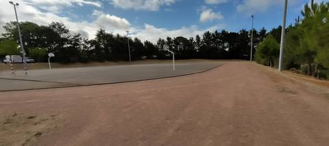
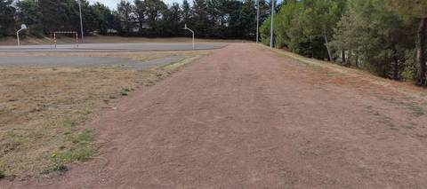
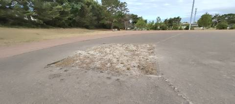
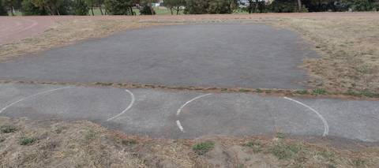
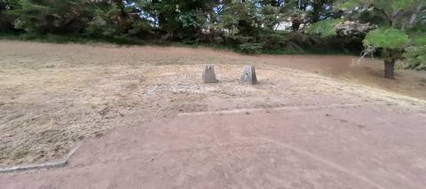

{kind=link}
{kind=link}
{kind=link}
{kind=link}
{kind=link}
Piste d'athlétisme de 200 m en cendrée. Mieux que rien, mais on est sur une très vieille installation qui n'a pas été rénovée depuis bien longtemps. Il y a une aire de lancer du poids, un sautoir en longueur, et probablement une ligne droite de 100 m.
Complexe de la Viauderie
Rue de la Viauderie, 44730 Saint-Michel-Chef-Chef · Loire-Atlantique
Complexe de la Viauderie est un équipement d'athlétisme situé à Saint-Michel-Chef-Chef (Loire-Atlantique), en Pays de la Loire. Il dispose d'une piste de 200 m en cendrée / stabilisé. On y trouve sautoir longueur et lancer du poids. Le site propose l'éclairage, des vestiaires et des douches.
Photos





Il manque sûrement une photo
Les sautoirs et les aires de lancer sont ce que la donnée publique décrit le plus mal, et ce qu'on photographie le moins. Un gros plan du sol, une perche bâchée, un bac de sable envahi : chacun ajoute ce qu'aucun champ ne porte.
Envoyer une photoSans compte GitHubPiste
- Revêtement
- Cendrée / stabilisé
- Développement
- 200 m
- Type de piste
- Anneau de stade d'athlétisme
- Configuration
- Plein air
- Mise en service
- 1990
Agrès recensés
- Sautoir longueur
- Lancer du poids
Accès & services
- Accès libre
- Non / réservé
- Éclairage
- Oui
- Vestiaires
- Oui
- Douches
- Oui
- Sanitaires
- Oui
Avis des athlètes
Autres sites du département
- Stade Jean Vincent
- Centre Sportif du Val Saint Martin
- Gymnase Municipal J. Girard
- Complexe Sportif du Parc du Grand Fay
- Complexe sportif Joséphine Baker (Le Clion-sur-Mer)
- College Lycee Saint Louis
Signaler une erreur ou compléter la fiche
Réf. I441820015 · Source : Data ES + communauté — Data ES, ministère chargé des Sports, Licence Ouverte 2.0. Les données sont déclaratives et peuvent être incomplètes : vérifiez les conditions d'accès avant de vous déplacer.